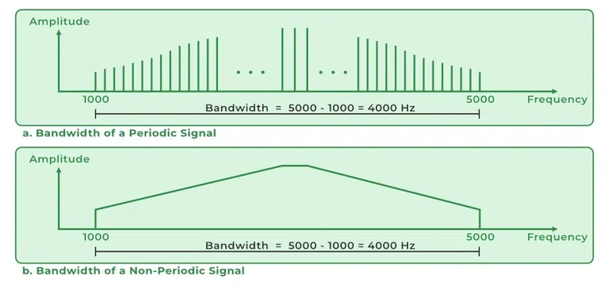
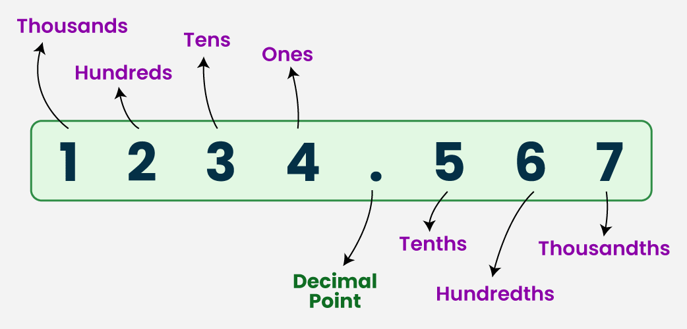
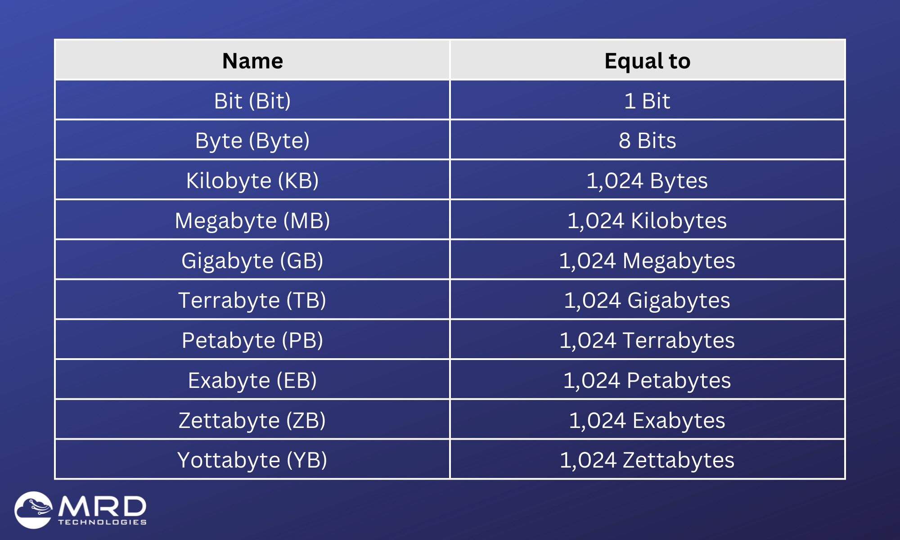
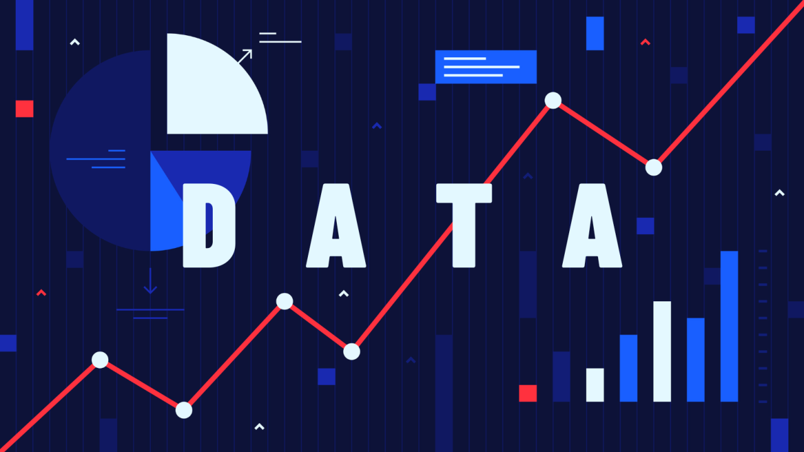
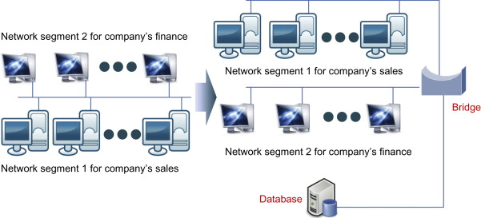
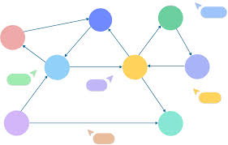

What is a Computer network?
ARPANET: Advanced Research Projects Agency Network, developed in the late 1960s by the U.S. Department of Defense, was the world's first operational packet-switched network and the direct predecessor to the modern Internet.
Bandwith: Network bandwidth is a measurement indicating the maximum capacity of a wired or wireless communications link to transmit data over a network connection in a given amount of time.
Binary: Binary code is the very basics of code and can be thought of as either a one or a zero usually determined by an electrical line being either on or off. These are the very basics of computer coding and how code works.
Decimal: The decimal number system is a base-10 positional numeral system that uses ten distinct digits—0, 1, 2, 3, 4, 5, 6, 7, 8, and 9—to represent all integers and non-integers.
Bits, Bytes, KiloBytes and Megabytes: Bits, Bytes, KiloBytes and Megabytes are all measurements of storage for computers. A bit is the smallest possible measurement with a byte being 8 bits. A kilobyte is 1024 bytes. A megabyte is 1024 kilobytes and so on
Cloud Computing: Instead of owning physical data centers, users rent access to these services from providers like AWS, Microsoft Azure, or Google Cloud..
What is a Social Network?
Data Vs Information: Data is raw, unprocessed facts, figures, symbols, or observations. Meanwhile, information is processed, organized, and structured data that has been given context and meaning.
Internet of Me (IoMe): The Internet of Me (IoMe) loosely refers to technology which connects our minds and bodies with the online world. It transforms our biological and cognitive life into streams of data which can be monitored, shared and shaped.
Internet of Things (IoT): Internet of Things (IoT) encompasses smart devices and smart objects that send and receive information using the internet and communication infrastructure.
Entity: An entity in a social network is a distinct, identifiable object, concept, or item—such as a user, product, or database record.
Relationship: A relationship describes how different data structures, objects, or tables interact with, depend on, or connect to one another.
Sociogram: a sociogram is a visual representation of a social network, mapping the relationships and interactions between individuals or entities within a group.
Cybersecurity: The protection of information technology elements, including hardware and software, data or network services.
Digital Citizenship: Digital citizenship is the responsible, ethical, and safe use of technology, encompassing digital literacy, online safety, and respectful interaction
Digital Footprint: Digital citizenship is the responsible, ethical, and safe use of technology, encompassing digital literacy, online safety, and respectful interaction
Six Degrees of Separation: the theory that any two nodes in a massive network—social, digital, or physical—are connected by an average of six or fewer intermediaries, often modeled using graph theory







